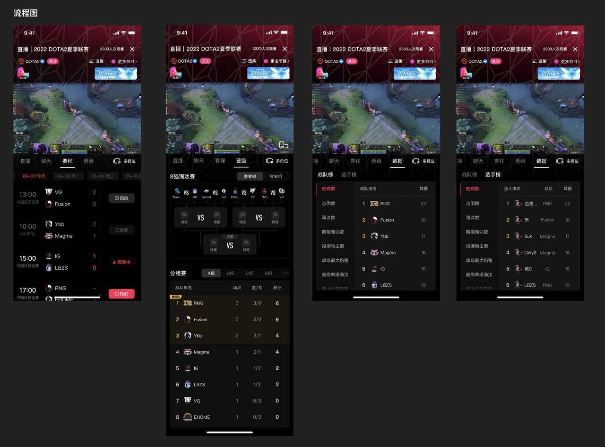
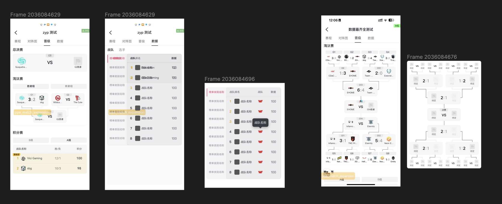
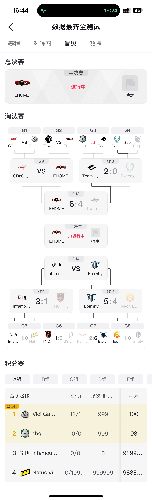
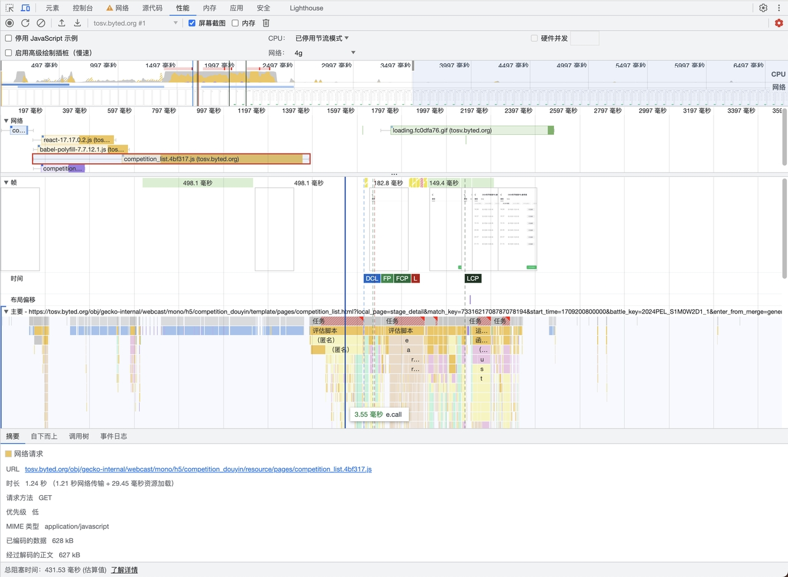
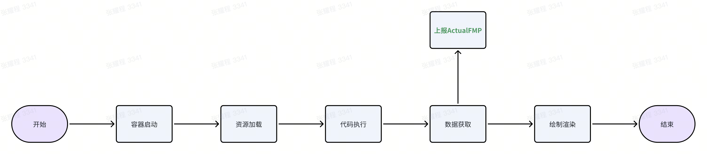
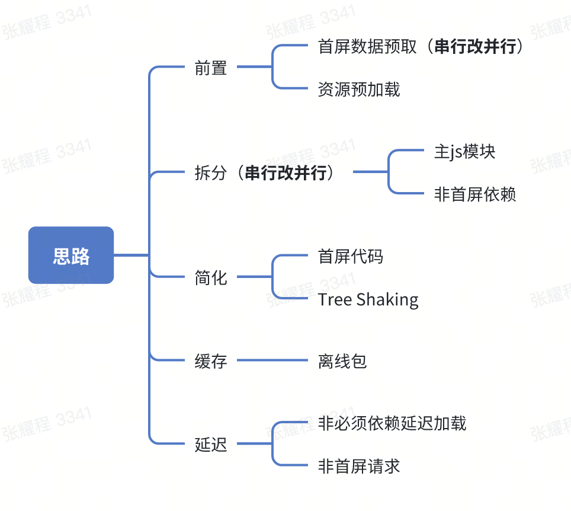
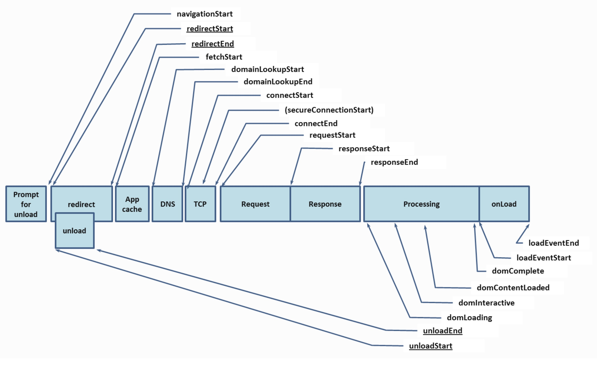
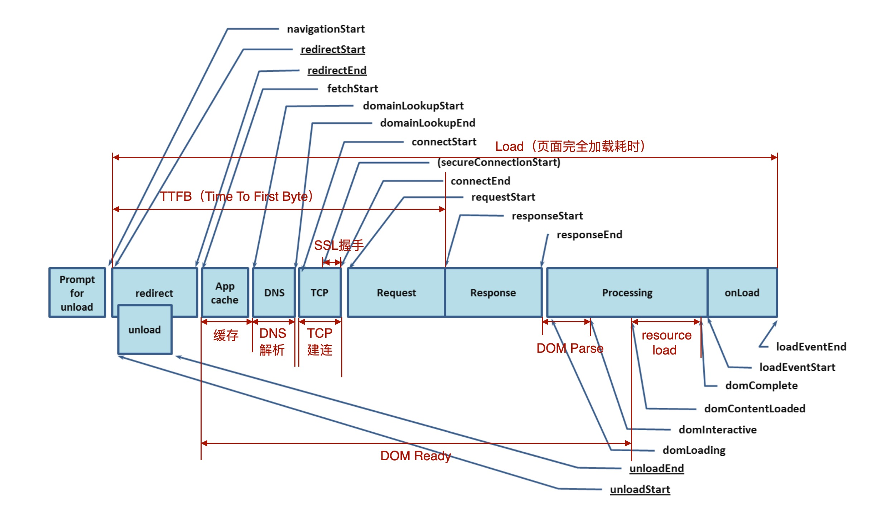

# 版权赛事详情页的体验优化
优化时间：2024.3.20
# 背景
目前在职主要负责的内容是抖音等宿主的端内 H5/Lynx（字节内部的高效跨平台框架）页面的编写
其中我负责的一个页面：赛事详情页，是抖音游戏（游戏赛事直播间、赛事搜索）赛事的重要信息呈现页面。



不同的版权赛事厂商会提供接口返回我们指定的数据结构，实现赛事信息的呈现。
以 PEL 春季赛为例，在 2.29-3.3 的四天比赛中，日均看播 UV 超 1xx 万，而页面的峰值 PV 也达 1xx 万
但是页面的首屏性能颇为不佳（尤其是在 Android 机型下）
# 性能现状
我取了一段比赛进行时（访问高峰期的时间范围）的性能数据作为基准样本，分析 ActualFMP、Load 事件、秒开绿
ActualFMP 定义：接口返回时间 - window.performance.timing.navigationStart。
这个性能指标接近于 LCP，在此页面中接近于真实的用户看到有意义内容的时间。
# 线上统计
| 指标类别 | 统计分位 | 表现 | 备注 |
|---|---|---|---|
| Load | 90 分位 | iOS：700ms-800ms 左右，Android：1.3s | |
| ActualFMp | 50 分位 | iOS：450ms 左右，Android：900ms 左右 | |
| ActualFMP | 90 分位 | iOS：900ms 左右，Android：1.5s～1.7s | |
| TotalActualFMP（ActualFMP + 容器启动时间） | 50 分位 | iOS：800ms 左右，Android：1.3s | |
| 秒开率（取 TotalActualFMP≤1s 占总量的比值） | - | iOS：81.41%，Android：24.53%。整体：54.84% |
# 线下具体分析
以我手上的 Android 测试机为例，将网络限制至条件下述进行测试：
- 8Mb/s 的上传 & 下载
- 50ms 响应时间
得到 window.performance.timing（解读见最后） 以及下述的监控数据：
{ | |
"connectStart": 1719898088842, | |
"navigationStart": 1719898088839, | |
"secureConnectionStart": 0, | |
"fetchStart": 1719898088842, | |
"domContentLoadedEventStart": 1719898090267, | |
"responseStart": 1719898089287, | |
"domInteractive": 1719898089442, | |
"domainLookupEnd": 1719898088842, | |
"responseEnd": 1719898089295, | |
"redirectStart": 0, | |
"requestStart": 1719898088925, | |
"unloadEventEnd": 0, | |
"unloadEventStart": 0, | |
"domLoading": 1719898089313, | |
"domComplete": 1719898090301, | |
"domainLookupStart": 1719898088842, | |
"loadEventStart": 1719898090302, | |
"domContentLoadedEventEnd": 1719898090268, | |
"loadEventEnd": 1719898090302, | |
"redirectEnd": 0, | |
"connectEnd": 1719898088842 | |
} |
| 指标 | 定义 | timestamp |
|---|---|---|
| TTFB | 发出页面请求到接收到应答数据第一个字节的时间总和 | 448ms |
| DOMReady | 页面 DOM 树创建完成 | 1426ms |
| DCL | （DOM Content Loaded）HTML 加载与解析完成 | 1627ms |
| FCP | （First Contentful Paint）首次内容绘制时间 | 1668ms |
| Load | 资源加载完毕 loadEventEnd - navigationStart | 1675.9ms |
| LCP | （Largest Contentful Paint）最大内容绘制 | 2080ms |

# 结论
从图内可以看到，浏览器先是加载 HTML，然后并行加载 js 模块以及页面样式表
这些模块的大小共计 203KB（编码），其中最有优化空间的主 js 模块花了 773.34 ms（762.772ms 网络 + 10.568ms 资源加载）加载，接着长达一个 160ms 的 long task 去解析并执行 js
直到 1428ms 时刻处理完成并触发 DCL。
# 优化思路

这些流程一般来说都是串行的，只要我们能把一些串行的环节改造成并行，或者降低该环节的耗时，就可以达到优化首屏的效果
针对这个页面的一些特点，我定制了如下的思路：

- 前置
- 将首屏的接口进行 prefetch，使页面初始化与请求数据并行，少了一个环节，预计优化 100ms-200ms
- 主 HTML 资源使用内部框架的能力进行 Preload。
- 简化
- 首屏时把非首屏可见内容延迟渲染
- 干掉类似功能的依赖，降低包体积
- Treeshaking。例如 Lodash 替换为 Loadsh-es，才能配合 Treeshaking 按需引入
- 版本相近的间接依赖，尽可能锁同一版本
- 拆分
- 使用直播的插件方案，将一些高频使用的库外置拆分出去，有效减少主包大小并利用并行加载。
- 将一些非首屏必须的依赖进行动态导入
# 优化效果
在线包、离线包体积均降了 10%（374K -> 339K）
数据预取下首屏直出效果更强、几乎看不见 loading
以下为三月底统计数据：
| 场景 | 图 | 效果 | 备注 |
|---|---|---|---|
| 普通搜索入口 (ActualFMP 90 分位) | Android：1.29s => 1.03s (-20%)。iOS：838ms => 529ms（-36.9%）。整体：1145ms => 879.8ms (-23.1%) |
秒开率（整体）：54.84% => 73.43%（优化上线一天后）=> 85.48%（上线三月后离线率较高时）
# 附：window.performance 采集性能数据的解读

# 时间节点
- 初始化
navigationStart：完成卸载前一个文档的时间点redirectStart：若有重定向，则为重定向开始时间，否则为 0redirectEnd：若有重定向，则为重定向结束时间，否则 0unloadStart、unloadEnd：若当前文档和上一个文档来自不同的源（origins），设置这两为 0，否则记录实际时间。
- 请求
fetchStart：浏览器发起资源请求，或者读取缓存（如果有）的开始时间domainLookupStart：查询 DNS（若有）的开始时间。如果没有发起查询，那就保持与fetchStart一致domainLookupEnd：同上，只不过表示结束时间connectStart：建立TCP连接的开始时间（如果需要建立连接），否则和domainLookupEnd相同- connectEnd：同上，只不过表示结束时间
- secureConnectionStart：HTTPS 的安全连接握手过程时间前，如果没有使用 HTTPS 则为 0。或者不可用时返回 undefined
- requestStart：客户端发送请求的时刻。
- responseStart：客户端收到应答首个字节的时刻
- responseEnd：客户端收到应答最后一个字节的时刻
- 解析渲染阶段
- domLoading：用户代理设置当前文档为 loading 状态，一般为浏览器即将开始解析第一批收到的 HTML 文档字节时。
- domInteractive：用户代理设置当前文档为可交互，一般为浏览器完成对所有 HTML 解析并且 DOM 构建完成的时间点（DOM 准备就绪的时间点
- domContentLoaded：用户代理触发 DCL 的时间，一般为 DOM 准备就绪且没有样式表阻止 JS 执行的时刻（可以开始构建渲染树），DOM、CSSOM 均准备就绪
- domComplete：用户代理设置文档为 complete，即所有处理完成，并且网页上的所有资源（图片）都下载完毕。
- loadEventStart：用户代理触发 Load 事件之前
- loadEventEnd：用户代理完成 Load 事件

# 时刻范围 / 耗时、意义
这些指标基本都是仅在双方非 0 值时计算有意义。
- Redirect（重定向时间）：rediectEnd - redirectStart，
- AppCache（缓存）： domainLookupStart - fetchStart
- DNS：domainLookupEnd - domainLookupStart
- TCP：connectEnd - connectStart
- SSL：connectEnd - secureConnectionStart
- Request：reponseStart - requestStart
- Response: responseEnd - responseStart
- Load（页面完全加载总时间）: LoadEventEnd - navigationStart
- DOMReady：domContentLoadedEventStart - fetchStart
- DOMParse：domInteractive - responseEnd
- ResourceLoad: LoadEventStart - domContentLoadedEventEnd
- TTFB（发出页面请求到接收到应答数据第一个字节的时间总和）: responseStart - navigationStart
# 参考
Navigation Timing (w3.org)
Navigation Timing Level 2 (w3.org)